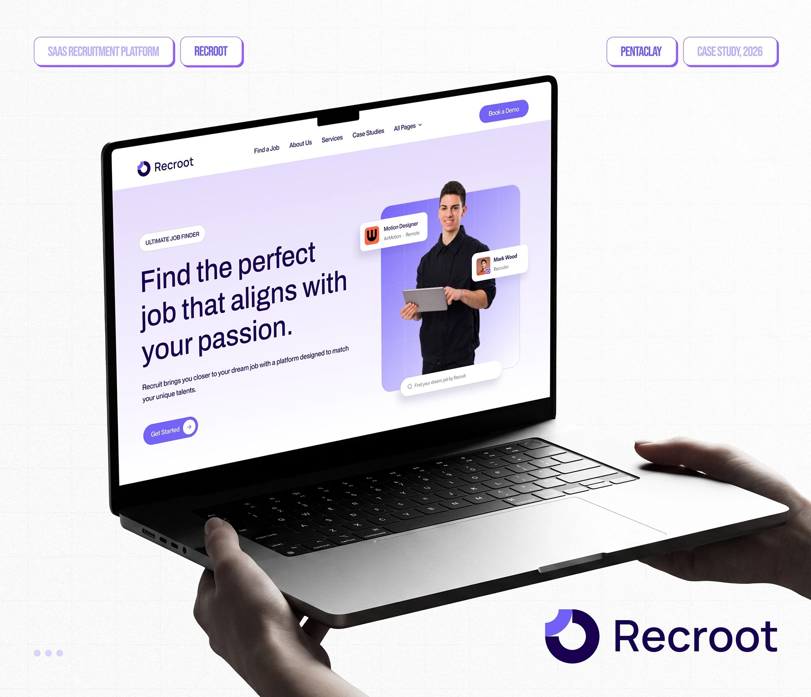
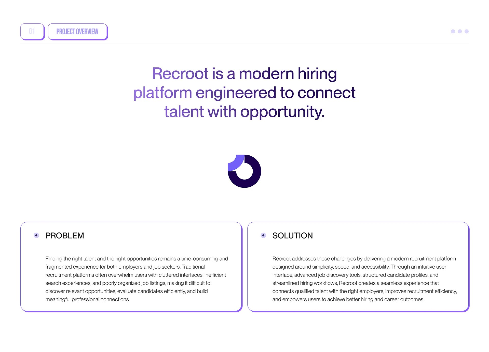
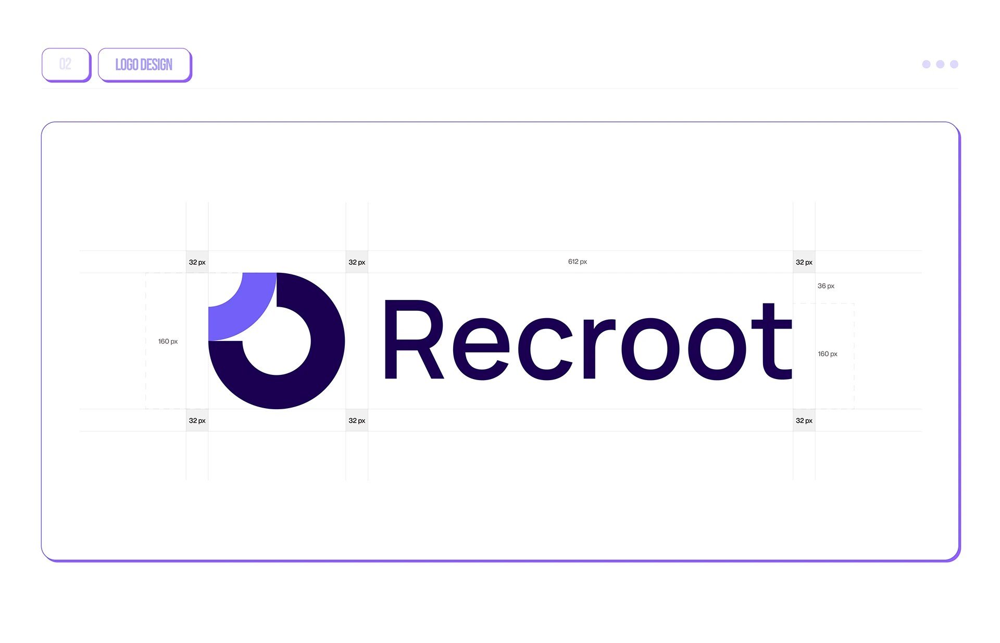
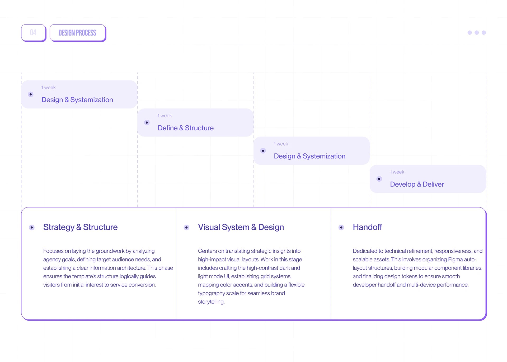
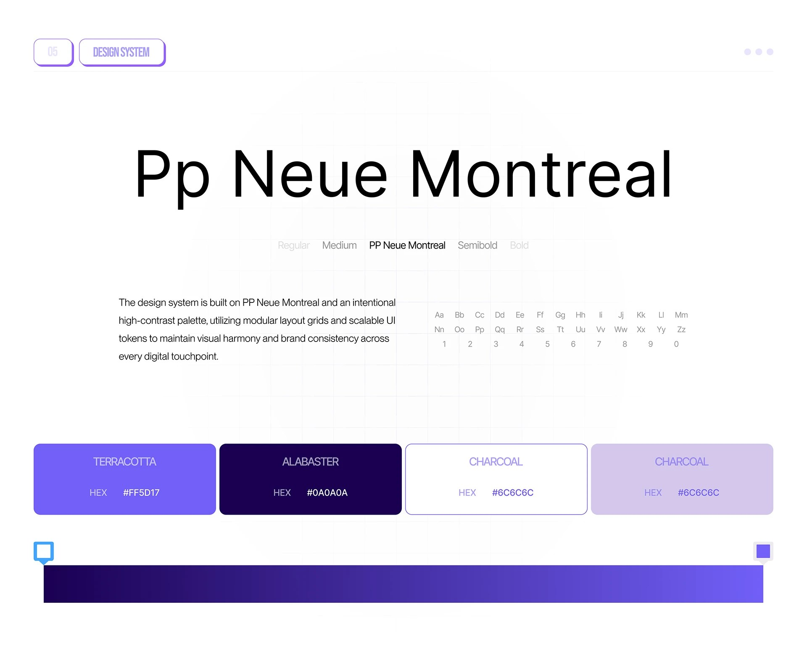
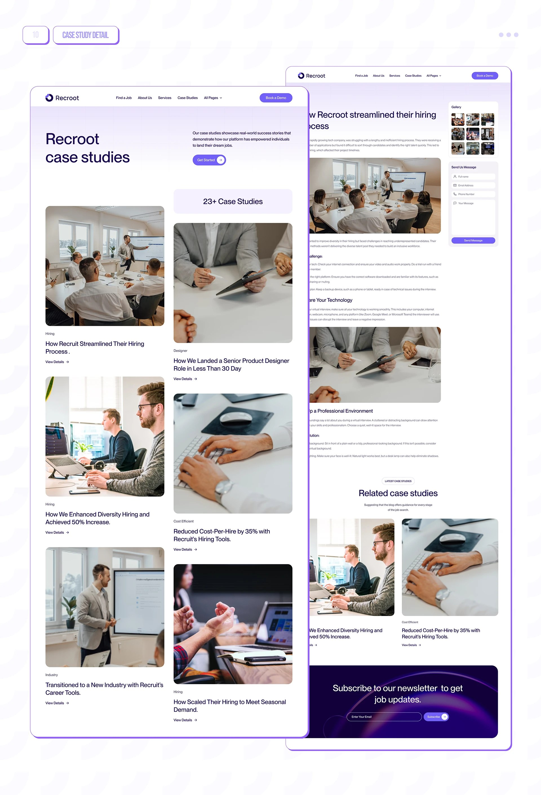
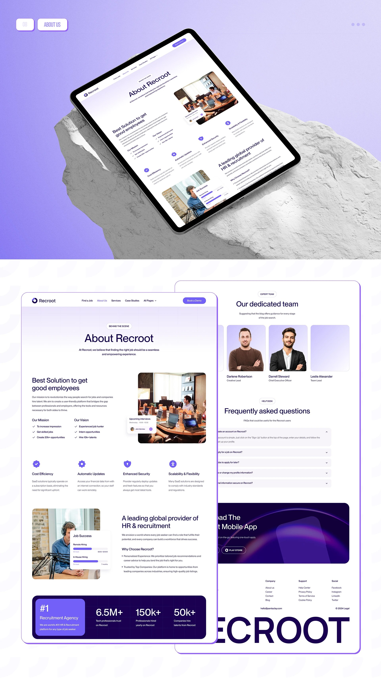
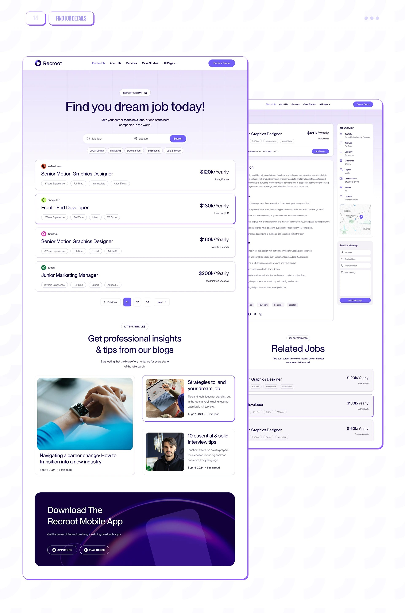
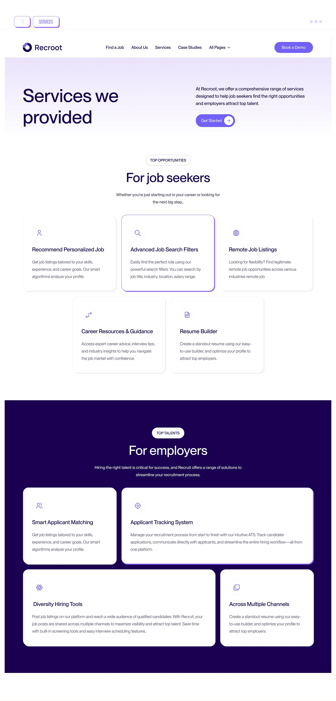
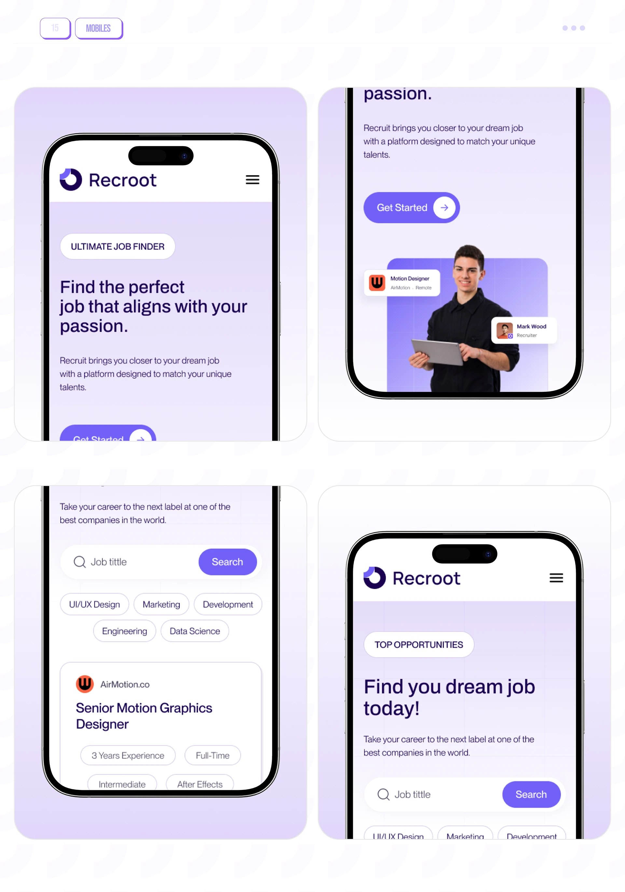

Recroot
Recroot is a modern hiring platform engineered to connect talent with opportunity: a full marketing and product website designed for two very different audiences at once, job seekers and the employers trying to reach them.

The brief
A recruitment agency site has to do two contradictory jobs on one domain: sell job seekers on a better job search experience, and sell employers on a better hiring pipeline, without either audience feeling like an afterthought. Recroot needed a homepage, job search, services, case-studies hub and blog that could hold both audiences without becoming two disconnected sites stapled together.


Problem, solution & type
The core problems were about information architecture more than visuals: scattered job listings, inconsistent application flows, and a services page that needed to separate "for job seekers" from "for employers" without duplicating content. The typeface, Pp Neue Montreal, was chosen for a clean, confident, slightly technical feel appropriate to a hiring platform rather than a lifestyle brand.


The landing page
The homepage leads with the job-seeker promise, "Find the perfect job that aligns with your passion," backed immediately by trust numbers (6.5M+ recruiting agents, 150k+ reviews, 50k+ companies), a simple three-step process, and a live feed of popular jobs, before transitioning into the employer-facing pitch further down the same page.
Supporting pages
Beyond the homepage, the site needed a case-studies hub to build credibility (client success stories, each with real outcome numbers), an about/FAQ page, a blog for SEO and thought leadership, a dedicated job-search experience with filters, and a services page that cleanly splits "for job seekers" from "for employers" instead of blending the two.





Outcome
A single, coherent website that serves two audiences without feeling split in two. Job seekers get a fast, trustworthy job search experience; employers get a clear case for why Recroot is the better hiring pipeline; and both get there through one consistent visual and typographic system.
The real design problem here was architectural, not decorative: deciding what belongs on the shared homepage versus what gets its own dedicated page for each audience, so neither side feels like the site was built for someone else first.